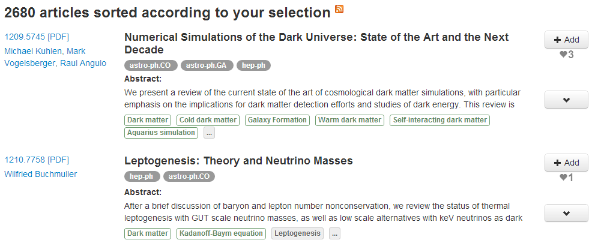
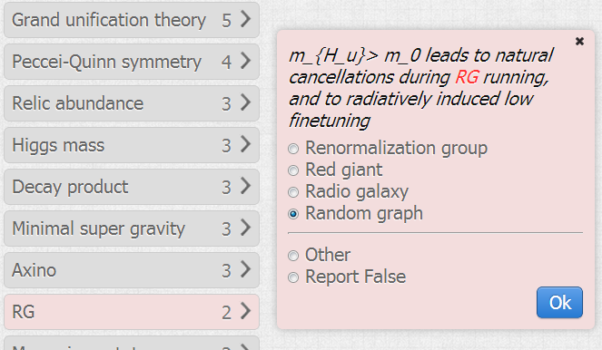

Tag Recommendation for Large-Scale Ontology-Based Information Systems
Roman Prokofyev, Alexey Boyarsky, Oleg Ruchayskiy, Karl Aberer, Gianuluca Demartini, Philippe Cudré-Mauroux
University of Fribourg,
Ecole Polytechnique Fédérale de Lausanne
Page 1/19
Introduction
Changing nature of scientific research
Before: small isolated groups

Introduction
Changing nature of scientific research
Now: collaboration of scientists with heterogeneous expertise. Data-driven
science.
Introduction
Changing nature of scientific research
- Need for effective knowledge organization
- Need for effective knowledge discovery
Introduction
Better system components
- Field-specific ontology
- Connection of the ontology to research material
 Page 5/19
Page 5/19
Our use-case: ontology-based paper tagging
Two tasks:
- Improving the relevance of automatically selected tags in ontology-based information systems
- Effective tag disambiguation
Linear-Nonlinear-Poisson Neurons Can Do Inference On Deep Boltzmann Machines
Boltzmann machine Gibbs sampling Deep learning Machine learning Bayesian approach Sigmoid function Exponential function Neural network Short Term Memory Synaptic plasticity Recurrent neural network Page 6/19ScienceWISE System
New papers discovery
- Allows to discover new articles and bookmark them for later use
- Public at sciencewise.info/articles/new
ScienceWISE System
Tagging process
- Concepts are extracted from TeX source
- Matched against ontology with synonimy
ScienceWISE System
Disambiguation process
Ambiguity example
 Page 9/19ScienceWISE System
Ambiguity impact
Dark Matter (1 occurr.) + DM (10 occurr.)
Density matrix Dark Matter
Yeilds more relevant results
Page 10/19Experimental settings
Evaluation metrics
Per paper:
- Precision@k - number of relevant tags out of k recommended tags
- Recall@k - ratio between the number of relevant tags and the total number of relevant tags
- R-precision - Precision@R, where R is the total number of relevant tags
- Average precision
Overall: Mean Average Precision (MAP)
Page 11/19
Experimental settings
Datasets
In the experiments we used real dataset collected by ScienceWISE system.
- Kept data from top-5 most active users
- 16 725 papers, 15